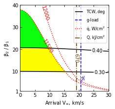
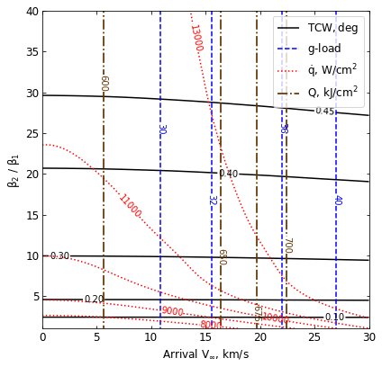

06 - a - Jupiter - Feasibility Charts - Drag¶
[1]:
from AMAT.planet import Planet
from AMAT.vehicle import Vehicle
import numpy as np
from scipy import interpolate
import matplotlib.pyplot as plt
from matplotlib import rcParams
from matplotlib.patches import Polygon
import os
[2]:
# Set up the planet and atmosphere model.
planet=Planet("JUPITER")
planet.h_skip = 1000e3
planet.h_low = 50e3
planet.loadAtmosphereModel('../atmdata/Jupiter/jupiter-galileo-asi.dat', 0 , 1 , 2, 3, heightInKmFlag=True)
[3]:
beta1 = 20.0
runID = 'jupiter-drag-'
[6]:
vinf_kms_array = np.linspace( 0.0, 30.0, 11)
betaRatio_array = np.linspace( 1.0, 41.0 , 11)
v0_kms_array = np.zeros(len(vinf_kms_array))
v0_kms_array[:] = np.sqrt(1.0*(vinf_kms_array[:]*1E3)**2.0 + 2*np.ones(len(vinf_kms_array))*planet.GM/(planet.RP+1000.0*1.0E3))/1.0E3
overShootLimit_array = np.zeros((len(v0_kms_array),len(betaRatio_array)))
underShootLimit_array = np.zeros((len(v0_kms_array),len(betaRatio_array)))
exitflag_os_array = np.zeros((len(v0_kms_array),len(betaRatio_array)))
exitflag_us_array = np.zeros((len(v0_kms_array),len(betaRatio_array)))
TCW_array = np.zeros((len(v0_kms_array),len(betaRatio_array)))
[7]:
for i in range(0,len(v0_kms_array)):
for j in range(0,len(betaRatio_array)):
vehicle=Vehicle('DMVehicle', 300.0, beta1, 0.0, 3.1416, 0.0, 0.10, planet)
vehicle.setInitialState(1000.0,0.0,0.0,v0_kms_array[i],0.0,-4.5,0.0,0.0)
vehicle.setSolverParams(1E-6)
vehicle.setDragModulationVehicleParams(beta1,betaRatio_array[j])
underShootLimit_array[i,j], exitflag_us_array[i,j] = vehicle.findUnderShootLimitD(2400.0, 1.0, -15.0,-4.0,1E-10,4000.0)
overShootLimit_array[i,j] , exitflag_os_array[i,j] = vehicle.findOverShootLimitD (2400.0, 1.0, -15.0,-4.0,1E-10,4000.0)
TCW_array[i,j] = overShootLimit_array[i,j] - underShootLimit_array[i,j]
print('VINF: '+str(vinf_kms_array[i])+' km/s, BETA RATIO: '+str(betaRatio_array[j])+' TCW: '+str(TCW_array[i,j])+' deg.')
np.savetxt('../data/jsr-paper/jupiter/'+runID+'vinf_kms_array.txt',vinf_kms_array)
np.savetxt('../data/jsr-paper/jupiter/'+runID+'v0_kms_array.txt',v0_kms_array)
np.savetxt('../data/jsr-paper/jupiter/'+runID+'betaRatio_array.txt',betaRatio_array)
np.savetxt('../data/jsr-paper/jupiter/'+runID+'overShootLimit_array.txt',overShootLimit_array)
np.savetxt('../data/jsr-paper/jupiter/'+runID+'exitflag_os_array.txt',exitflag_os_array)
np.savetxt('../data/jsr-paper/jupiter/'+runID+'underShootLimit_array.txt',underShootLimit_array)
np.savetxt('../data/jsr-paper/jupiter/'+runID+'exitflag_us_array.txt',exitflag_us_array)
np.savetxt('../data/jsr-paper/jupiter/'+runID+'TCW_array.txt',TCW_array)
VINF: 0.0 km/s, BETA RATIO: 1.0 TCW: 0.0 deg.
VINF: 0.0 km/s, BETA RATIO: 5.0 TCW: 0.2136042777055991 deg.
VINF: 0.0 km/s, BETA RATIO: 9.0 TCW: 0.2881665681998129 deg.
VINF: 0.0 km/s, BETA RATIO: 13.0 TCW: 0.3363312108849641 deg.
VINF: 0.0 km/s, BETA RATIO: 17.0 TCW: 0.3727796818857314 deg.
VINF: 0.0 km/s, BETA RATIO: 21.0 TCW: 0.4020524562583887 deg.
VINF: 0.0 km/s, BETA RATIO: 25.0 TCW: 0.42639978193619754 deg.
VINF: 0.0 km/s, BETA RATIO: 29.0 TCW: 0.4470359181796084 deg.
VINF: 0.0 km/s, BETA RATIO: 33.0 TCW: 0.4646622138097882 deg.
VINF: 0.0 km/s, BETA RATIO: 37.0 TCW: 0.4799478743370855 deg.
VINF: 0.0 km/s, BETA RATIO: 41.0 TCW: 0.4931755976722343 deg.
VINF: 3.0 km/s, BETA RATIO: 1.0 TCW: 0.0 deg.
VINF: 3.0 km/s, BETA RATIO: 5.0 TCW: 0.21373630032030633 deg.
VINF: 3.0 km/s, BETA RATIO: 9.0 TCW: 0.2883251091479906 deg.
VINF: 3.0 km/s, BETA RATIO: 13.0 TCW: 0.3364456538547529 deg.
VINF: 3.0 km/s, BETA RATIO: 17.0 TCW: 0.37299971061293036 deg.
VINF: 3.0 km/s, BETA RATIO: 21.0 TCW: 0.40228760842001066 deg.
VINF: 3.0 km/s, BETA RATIO: 25.0 TCW: 0.4266443977394374 deg.
VINF: 3.0 km/s, BETA RATIO: 29.0 TCW: 0.4472813949250849 deg.
VINF: 3.0 km/s, BETA RATIO: 33.0 TCW: 0.46490313117101323 deg.
VINF: 3.0 km/s, BETA RATIO: 37.0 TCW: 0.48010109132155776 deg.
VINF: 3.0 km/s, BETA RATIO: 41.0 TCW: 0.49332647401752183 deg.
VINF: 6.0 km/s, BETA RATIO: 1.0 TCW: 0.0 deg.
VINF: 6.0 km/s, BETA RATIO: 5.0 TCW: 0.21389244812598918 deg.
VINF: 6.0 km/s, BETA RATIO: 9.0 TCW: 0.28854819819389377 deg.
VINF: 6.0 km/s, BETA RATIO: 13.0 TCW: 0.33678039567166707 deg.
VINF: 6.0 km/s, BETA RATIO: 17.0 TCW: 0.3734081579532358 deg.
VINF: 6.0 km/s, BETA RATIO: 21.0 TCW: 0.40273847387288697 deg.
VINF: 6.0 km/s, BETA RATIO: 25.0 TCW: 0.42712622942053713 deg.
VINF: 6.0 km/s, BETA RATIO: 29.0 TCW: 0.4477658009491279 deg.
VINF: 6.0 km/s, BETA RATIO: 33.0 TCW: 0.46537083882139996 deg.
VINF: 6.0 km/s, BETA RATIO: 37.0 TCW: 0.4805435933812987 deg.
VINF: 6.0 km/s, BETA RATIO: 41.0 TCW: 0.4937456134648528 deg.
VINF: 9.0 km/s, BETA RATIO: 1.0 TCW: 0.0 deg.
VINF: 9.0 km/s, BETA RATIO: 5.0 TCW: 0.21406033650418976 deg.
VINF: 9.0 km/s, BETA RATIO: 9.0 TCW: 0.28891514863062184 deg.
VINF: 9.0 km/s, BETA RATIO: 13.0 TCW: 0.3373322349143564 deg.
VINF: 9.0 km/s, BETA RATIO: 17.0 TCW: 0.3739885871691513 deg.
VINF: 9.0 km/s, BETA RATIO: 21.0 TCW: 0.403475334700488 deg.
VINF: 9.0 km/s, BETA RATIO: 25.0 TCW: 0.4278289279609453 deg.
VINF: 9.0 km/s, BETA RATIO: 29.0 TCW: 0.44855342135269893 deg.
VINF: 9.0 km/s, BETA RATIO: 33.0 TCW: 0.46613870085275266 deg.
VINF: 9.0 km/s, BETA RATIO: 37.0 TCW: 0.48124885826109676 deg.
VINF: 9.0 km/s, BETA RATIO: 41.0 TCW: 0.49440613311890047 deg.
VINF: 12.0 km/s, BETA RATIO: 1.0 TCW: 0.0 deg.
VINF: 12.0 km/s, BETA RATIO: 5.0 TCW: 0.2143949824385345 deg.
VINF: 12.0 km/s, BETA RATIO: 9.0 TCW: 0.28934974333969876 deg.
VINF: 12.0 km/s, BETA RATIO: 13.0 TCW: 0.3380891138294828 deg.
VINF: 12.0 km/s, BETA RATIO: 17.0 TCW: 0.3749029158279882 deg.
VINF: 12.0 km/s, BETA RATIO: 21.0 TCW: 0.40439487367257243 deg.
VINF: 12.0 km/s, BETA RATIO: 25.0 TCW: 0.4288948328758124 deg.
VINF: 12.0 km/s, BETA RATIO: 29.0 TCW: 0.4496152475767303 deg.
VINF: 12.0 km/s, BETA RATIO: 33.0 TCW: 0.467146047289134 deg.
VINF: 12.0 km/s, BETA RATIO: 37.0 TCW: 0.4821960561530432 deg.
VINF: 12.0 km/s, BETA RATIO: 41.0 TCW: 0.4952961387389223 deg.
VINF: 15.0 km/s, BETA RATIO: 1.0 TCW: 0.0 deg.
VINF: 15.0 km/s, BETA RATIO: 5.0 TCW: 0.21479340876976494 deg.
VINF: 15.0 km/s, BETA RATIO: 9.0 TCW: 0.2899809478985844 deg.
VINF: 15.0 km/s, BETA RATIO: 13.0 TCW: 0.3389524132726365 deg.
VINF: 15.0 km/s, BETA RATIO: 17.0 TCW: 0.3760254957451252 deg.
VINF: 15.0 km/s, BETA RATIO: 21.0 TCW: 0.4056377437154879 deg.
VINF: 15.0 km/s, BETA RATIO: 25.0 TCW: 0.4301202450878918 deg.
VINF: 15.0 km/s, BETA RATIO: 29.0 TCW: 0.4508201141070458 deg.
VINF: 15.0 km/s, BETA RATIO: 33.0 TCW: 0.468283904629061 deg.
VINF: 15.0 km/s, BETA RATIO: 37.0 TCW: 0.48325862638739636 deg.
VINF: 15.0 km/s, BETA RATIO: 41.0 TCW: 0.4962898651283467 deg.
VINF: 18.0 km/s, BETA RATIO: 1.0 TCW: 0.0 deg.
VINF: 18.0 km/s, BETA RATIO: 5.0 TCW: 0.21524633393710246 deg.
VINF: 18.0 km/s, BETA RATIO: 9.0 TCW: 0.2907290539587848 deg.
VINF: 18.0 km/s, BETA RATIO: 13.0 TCW: 0.34005805647029774 deg.
VINF: 18.0 km/s, BETA RATIO: 17.0 TCW: 0.3773473650217056 deg.
VINF: 18.0 km/s, BETA RATIO: 21.0 TCW: 0.40707180840399815 deg.
VINF: 18.0 km/s, BETA RATIO: 25.0 TCW: 0.43161840495304205 deg.
VINF: 18.0 km/s, BETA RATIO: 29.0 TCW: 0.45226021203416167 deg.
VINF: 18.0 km/s, BETA RATIO: 33.0 TCW: 0.4696499540004879 deg.
VINF: 18.0 km/s, BETA RATIO: 37.0 TCW: 0.4845340279134689 deg.
VINF: 18.0 km/s, BETA RATIO: 41.0 TCW: 0.4974885430710856 deg.
VINF: 21.0 km/s, BETA RATIO: 1.0 TCW: 0.0 deg.
VINF: 21.0 km/s, BETA RATIO: 5.0 TCW: 0.21567887389392126 deg.
VINF: 21.0 km/s, BETA RATIO: 9.0 TCW: 0.2915814334337483 deg.
VINF: 21.0 km/s, BETA RATIO: 13.0 TCW: 0.3413046869827667 deg.
VINF: 21.0 km/s, BETA RATIO: 17.0 TCW: 0.37874766992172226 deg.
VINF: 21.0 km/s, BETA RATIO: 21.0 TCW: 0.4086055943262181 deg.
VINF: 21.0 km/s, BETA RATIO: 25.0 TCW: 0.433280387231207 deg.
VINF: 21.0 km/s, BETA RATIO: 29.0 TCW: 0.453769122272206 deg.
VINF: 21.0 km/s, BETA RATIO: 33.0 TCW: 0.471119389992964 deg.
VINF: 21.0 km/s, BETA RATIO: 37.0 TCW: 0.4859042563402909 deg.
VINF: 21.0 km/s, BETA RATIO: 41.0 TCW: 0.4987719744021888 deg.
VINF: 24.0 km/s, BETA RATIO: 1.0 TCW: 0.0 deg.
VINF: 24.0 km/s, BETA RATIO: 5.0 TCW: 0.21626820602250518 deg.
VINF: 24.0 km/s, BETA RATIO: 9.0 TCW: 0.2925188715526019 deg.
VINF: 24.0 km/s, BETA RATIO: 13.0 TCW: 0.34265856415004237 deg.
VINF: 24.0 km/s, BETA RATIO: 17.0 TCW: 0.3803900198836345 deg.
VINF: 24.0 km/s, BETA RATIO: 21.0 TCW: 0.41040410441928543 deg.
VINF: 24.0 km/s, BETA RATIO: 25.0 TCW: 0.43501672772254096 deg.
VINF: 24.0 km/s, BETA RATIO: 29.0 TCW: 0.4554931251259404 deg.
VINF: 24.0 km/s, BETA RATIO: 33.0 TCW: 0.47263518304680474 deg.
VINF: 24.0 km/s, BETA RATIO: 37.0 TCW: 0.48730866410187446 deg.
VINF: 24.0 km/s, BETA RATIO: 41.0 TCW: 0.500090451532742 deg.
VINF: 27.0 km/s, BETA RATIO: 1.0 TCW: 0.0 deg.
VINF: 27.0 km/s, BETA RATIO: 5.0 TCW: 0.21680262633162783 deg.
VINF: 27.0 km/s, BETA RATIO: 9.0 TCW: 0.2935383872318198 deg.
VINF: 27.0 km/s, BETA RATIO: 13.0 TCW: 0.3441036602962413 deg.
VINF: 27.0 km/s, BETA RATIO: 17.0 TCW: 0.38206826794339577 deg.
VINF: 27.0 km/s, BETA RATIO: 21.0 TCW: 0.4122081699388218 deg.
VINF: 27.0 km/s, BETA RATIO: 25.0 TCW: 0.4367892465161276 deg.
VINF: 27.0 km/s, BETA RATIO: 29.0 TCW: 0.45714972517453134 deg.
VINF: 27.0 km/s, BETA RATIO: 33.0 TCW: 0.47416293861169834 deg.
VINF: 27.0 km/s, BETA RATIO: 37.0 TCW: 0.48871489811426727 deg.
VINF: 27.0 km/s, BETA RATIO: 41.0 TCW: 0.5014068888776819 deg.
VINF: 30.0 km/s, BETA RATIO: 1.0 TCW: 0.0 deg.
VINF: 30.0 km/s, BETA RATIO: 5.0 TCW: 0.21734431386721553 deg.
VINF: 30.0 km/s, BETA RATIO: 9.0 TCW: 0.29460557279526256 deg.
VINF: 30.0 km/s, BETA RATIO: 13.0 TCW: 0.345602418827184 deg.
VINF: 30.0 km/s, BETA RATIO: 17.0 TCW: 0.38378542231657775 deg.
VINF: 30.0 km/s, BETA RATIO: 21.0 TCW: 0.41404338288703 deg.
VINF: 30.0 km/s, BETA RATIO: 25.0 TCW: 0.438563992298441 deg.
VINF: 30.0 km/s, BETA RATIO: 29.0 TCW: 0.45876530148962047 deg.
VINF: 30.0 km/s, BETA RATIO: 33.0 TCW: 0.47562700958224013 deg.
VINF: 30.0 km/s, BETA RATIO: 37.0 TCW: 0.49006787584221456 deg.
VINF: 30.0 km/s, BETA RATIO: 41.0 TCW: 0.5026777471066453 deg.
[34]:
acc_net_g_max_array = np.zeros((len(v0_kms_array),len(betaRatio_array)))
stag_pres_atm_max_array = np.zeros((len(v0_kms_array),len(betaRatio_array)))
q_stag_total_max_array = np.zeros((len(v0_kms_array),len(betaRatio_array)))
heatload_max_array = np.zeros((len(v0_kms_array),len(betaRatio_array)))
for i in range(0,len(v0_kms_array)):
for j in range(0,len(betaRatio_array)):
vehicle=Vehicle('DMVehicle', 300, beta1, 0.0, 3.1416, 0.0, 0.10, planet)
vehicle.setInitialState(1000.0,0.0,0.0,v0_kms_array[i],0.0,overShootLimit_array[i,j],0.0,0.0)
vehicle.setSolverParams(1E-5)
vehicle.propogateEntry (2400.0, 1.0, 0.0)
# Extract and save variables to plot
t_min_os = vehicle.t_minc
h_km_os = vehicle.h_kmc
acc_net_g_os = vehicle.acc_net_g
q_stag_con_os = vehicle.q_stag_con
q_stag_rad_os = vehicle.q_stag_rad
rc_os = vehicle.rc
vc_os = vehicle.vc
stag_pres_atm_os = vehicle.computeStagPres(rc_os,vc_os)/(1.01325E5)
heatload_os = vehicle.heatload
vehicle=Vehicle('DMVehicle', 300.0, beta1, 0.0, 3.1416, 0.0, 0.10, planet)
vehicle.setInitialState(1000.0,0.0,0.0,v0_kms_array[i],0.0,underShootLimit_array[i,j],0.0,0.0)
vehicle.setSolverParams( 1E-5)
vehicle.propogateEntry (2400.0, 1.0, 0.0)
# Extract and save variable to plot
t_min_us = vehicle.t_minc
h_km_us = vehicle.h_kmc
acc_net_g_us = vehicle.acc_net_g
q_stag_con_us = vehicle.q_stag_con
q_stag_rad_us = vehicle.q_stag_rad
rc_us = vehicle.rc
vc_us = vehicle.vc
stag_pres_atm_us = vehicle.computeStagPres(rc_us,vc_us)/(1.01325E5)
heatload_us = vehicle.heatload
q_stag_total_os = q_stag_con_os + q_stag_rad_os
q_stag_total_us = q_stag_con_us + q_stag_rad_us
acc_net_g_max_array[i,j] = max(max(acc_net_g_os),max(acc_net_g_os))
stag_pres_atm_max_array[i,j] = max(max(stag_pres_atm_os),max(stag_pres_atm_os))
q_stag_total_max_array[i,j] = max(max(q_stag_total_os),max(q_stag_total_us))
heatload_max_array[i,j] = max(max(heatload_os),max(heatload_os))
print("V_infty: "+str(vinf_kms_array[i])+" km/s"+", BR: "+str(betaRatio_array[j])+" G_MAX: "+str(acc_net_g_max_array[i,j])+" QDOT_MAX: "+str(q_stag_total_max_array[i,j])+" J_MAX: "+str(heatload_max_array[i,j])+" STAG. PRES: "+str(stag_pres_atm_max_array[i,j]))
np.savetxt('../data/jsr-paper/jupiter/'+runID+'acc_net_g_max_array.txt',acc_net_g_max_array)
np.savetxt('../data/jsr-paper/jupiter/'+runID+'stag_pres_atm_max_array.txt',stag_pres_atm_max_array)
np.savetxt('../data/jsr-paper/jupiter/'+runID+'q_stag_total_max_array.txt',q_stag_total_max_array)
np.savetxt('../data/jsr-paper/jupiter/'+runID+'heatload_max_array.txt',heatload_max_array)
V_infty: 0.0 km/s, BR: 1.0 G_MAX: 28.123401441184843 QDOT_MAX: 6620.818090179809 J_MAX: 593560.6703787534 STAG. PRES: 0.05446142114560911
V_infty: 0.0 km/s, BR: 5.0 G_MAX: 28.123401441184843 QDOT_MAX: 9171.31992635625 J_MAX: 593560.6703787534 STAG. PRES: 0.05446142114560911
V_infty: 0.0 km/s, BR: 9.0 G_MAX: 28.123401441184843 QDOT_MAX: 9895.565111584066 J_MAX: 593560.6703787534 STAG. PRES: 0.05446142114560911
V_infty: 0.0 km/s, BR: 13.0 G_MAX: 28.123401441184843 QDOT_MAX: 10321.759363668096 J_MAX: 593560.6703787534 STAG. PRES: 0.05446142114560911
V_infty: 0.0 km/s, BR: 17.0 G_MAX: 28.123401441184843 QDOT_MAX: 10628.786756903619 J_MAX: 593560.6703787534 STAG. PRES: 0.05446142114560911
V_infty: 0.0 km/s, BR: 21.0 G_MAX: 28.123401441184843 QDOT_MAX: 10872.998698541747 J_MAX: 593560.6703787534 STAG. PRES: 0.05446142114560911
V_infty: 0.0 km/s, BR: 25.0 G_MAX: 28.123401441184843 QDOT_MAX: 11065.380917028317 J_MAX: 593560.6703787534 STAG. PRES: 0.05446142114560911
V_infty: 0.0 km/s, BR: 29.0 G_MAX: 28.123401441184843 QDOT_MAX: 11227.161144547983 J_MAX: 593560.6703787534 STAG. PRES: 0.05446142114560911
V_infty: 0.0 km/s, BR: 33.0 G_MAX: 28.123401441184843 QDOT_MAX: 11363.200297799936 J_MAX: 593560.6703787534 STAG. PRES: 0.05446142114560911
V_infty: 0.0 km/s, BR: 37.0 G_MAX: 28.123401441184843 QDOT_MAX: 11476.167535509627 J_MAX: 593560.6703787534 STAG. PRES: 0.05446142114560911
V_infty: 0.0 km/s, BR: 41.0 G_MAX: 28.123401441184843 QDOT_MAX: 11579.143216703149 J_MAX: 593560.6703787534 STAG. PRES: 0.05446142114560911
V_infty: 3.0 km/s, BR: 1.0 G_MAX: 28.25870861244563 QDOT_MAX: 6654.751508890209 J_MAX: 595354.7034801741 STAG. PRES: 0.05472347243625391
V_infty: 3.0 km/s, BR: 5.0 G_MAX: 28.25870861244563 QDOT_MAX: 9222.503173433572 J_MAX: 595354.7034801741 STAG. PRES: 0.05472347243625391
V_infty: 3.0 km/s, BR: 9.0 G_MAX: 28.25870861244563 QDOT_MAX: 9949.267489345517 J_MAX: 595354.7034801741 STAG. PRES: 0.05472347243625391
V_infty: 3.0 km/s, BR: 13.0 G_MAX: 28.25870861244563 QDOT_MAX: 10381.468876994608 J_MAX: 595354.7034801741 STAG. PRES: 0.05472347243625391
V_infty: 3.0 km/s, BR: 17.0 G_MAX: 28.25870861244563 QDOT_MAX: 10692.817240908442 J_MAX: 595354.7034801741 STAG. PRES: 0.05472347243625391
V_infty: 3.0 km/s, BR: 21.0 G_MAX: 28.25870861244563 QDOT_MAX: 10931.980241415564 J_MAX: 595354.7034801741 STAG. PRES: 0.05472347243625391
V_infty: 3.0 km/s, BR: 25.0 G_MAX: 28.25870861244563 QDOT_MAX: 11123.20209795268 J_MAX: 595354.7034801741 STAG. PRES: 0.05472347243625391
V_infty: 3.0 km/s, BR: 29.0 G_MAX: 28.25870861244563 QDOT_MAX: 11286.73462563254 J_MAX: 595354.7034801741 STAG. PRES: 0.05472347243625391
V_infty: 3.0 km/s, BR: 33.0 G_MAX: 28.25870861244563 QDOT_MAX: 11427.650496896615 J_MAX: 595354.7034801741 STAG. PRES: 0.05472347243625391
V_infty: 3.0 km/s, BR: 37.0 G_MAX: 28.25870861244563 QDOT_MAX: 11545.314376716273 J_MAX: 595354.7034801741 STAG. PRES: 0.05472347243625391
V_infty: 3.0 km/s, BR: 41.0 G_MAX: 28.25870861244563 QDOT_MAX: 11640.185889455539 J_MAX: 595354.7034801741 STAG. PRES: 0.05472347243625391
V_infty: 6.0 km/s, BR: 1.0 G_MAX: 28.687277159711083 QDOT_MAX: 6761.083202890501 J_MAX: 600941.962688217 STAG. PRES: 0.05555323340495844
V_infty: 6.0 km/s, BR: 5.0 G_MAX: 28.687277159711083 QDOT_MAX: 9370.619933863161 J_MAX: 600941.962688217 STAG. PRES: 0.05555323340495844
V_infty: 6.0 km/s, BR: 9.0 G_MAX: 28.687277159711083 QDOT_MAX: 10114.069912369974 J_MAX: 600941.962688217 STAG. PRES: 0.05555323340495844
V_infty: 6.0 km/s, BR: 13.0 G_MAX: 28.687277159711083 QDOT_MAX: 10552.400020679994 J_MAX: 600941.962688217 STAG. PRES: 0.05555323340495844
V_infty: 6.0 km/s, BR: 17.0 G_MAX: 28.687277159711083 QDOT_MAX: 10868.904672971448 J_MAX: 600941.962688217 STAG. PRES: 0.05555323340495844
V_infty: 6.0 km/s, BR: 21.0 G_MAX: 28.687277159711083 QDOT_MAX: 11120.849776187604 J_MAX: 600941.962688217 STAG. PRES: 0.05555323340495844
V_infty: 6.0 km/s, BR: 25.0 G_MAX: 28.687277159711083 QDOT_MAX: 11319.389329149131 J_MAX: 600941.962688217 STAG. PRES: 0.05555323340495844
V_infty: 6.0 km/s, BR: 29.0 G_MAX: 28.687277159711083 QDOT_MAX: 11484.969251173641 J_MAX: 600941.962688217 STAG. PRES: 0.05555323340495844
V_infty: 6.0 km/s, BR: 33.0 G_MAX: 28.687277159711083 QDOT_MAX: 11625.369023714635 J_MAX: 600941.962688217 STAG. PRES: 0.05555323340495844
V_infty: 6.0 km/s, BR: 37.0 G_MAX: 28.687277159711083 QDOT_MAX: 11738.128673595116 J_MAX: 600941.962688217 STAG. PRES: 0.05555323340495844
V_infty: 6.0 km/s, BR: 41.0 G_MAX: 28.687277159711083 QDOT_MAX: 11846.848045522936 J_MAX: 600941.962688217 STAG. PRES: 0.05555323340495844
V_infty: 9.0 km/s, BR: 1.0 G_MAX: 29.412088611638797 QDOT_MAX: 6940.133655299161 J_MAX: 610339.7160869257 STAG. PRES: 0.056956725111444444
V_infty: 9.0 km/s, BR: 5.0 G_MAX: 29.412088611638797 QDOT_MAX: 9628.2555910856 J_MAX: 610339.7160869257 STAG. PRES: 0.056956725111444444
V_infty: 9.0 km/s, BR: 9.0 G_MAX: 29.412088611638797 QDOT_MAX: 10393.253314046353 J_MAX: 610339.7160869257 STAG. PRES: 0.056956725111444444
V_infty: 9.0 km/s, BR: 13.0 G_MAX: 29.412088611638797 QDOT_MAX: 10851.669132073657 J_MAX: 610339.7160869257 STAG. PRES: 0.056956725111444444
V_infty: 9.0 km/s, BR: 17.0 G_MAX: 29.412088611638797 QDOT_MAX: 11180.317124423982 J_MAX: 610339.7160869257 STAG. PRES: 0.056956725111444444
V_infty: 9.0 km/s, BR: 21.0 G_MAX: 29.412088611638797 QDOT_MAX: 11435.881729463228 J_MAX: 610339.7160869257 STAG. PRES: 0.056956725111444444
V_infty: 9.0 km/s, BR: 25.0 G_MAX: 29.412088611638797 QDOT_MAX: 11639.68566424089 J_MAX: 610339.7160869257 STAG. PRES: 0.056956725111444444
V_infty: 9.0 km/s, BR: 29.0 G_MAX: 29.412088611638797 QDOT_MAX: 11814.10310841768 J_MAX: 610339.7160869257 STAG. PRES: 0.056956725111444444
V_infty: 9.0 km/s, BR: 33.0 G_MAX: 29.412088611638797 QDOT_MAX: 11961.54893475019 J_MAX: 610339.7160869257 STAG. PRES: 0.056956725111444444
V_infty: 9.0 km/s, BR: 37.0 G_MAX: 29.412088611638797 QDOT_MAX: 12081.497530247967 J_MAX: 610339.7160869257 STAG. PRES: 0.056956725111444444
V_infty: 9.0 km/s, BR: 41.0 G_MAX: 29.412088611638797 QDOT_MAX: 12188.501877127896 J_MAX: 610339.7160869257 STAG. PRES: 0.056956725111444444
V_infty: 12.0 km/s, BR: 1.0 G_MAX: 30.42346976701272 QDOT_MAX: 7197.068442043545 J_MAX: 623484.4308107734 STAG. PRES: 0.05891492976327301
V_infty: 12.0 km/s, BR: 5.0 G_MAX: 30.42346976701272 QDOT_MAX: 9994.275986354933 J_MAX: 623484.4308107734 STAG. PRES: 0.05891492976327301
V_infty: 12.0 km/s, BR: 9.0 G_MAX: 30.42346976701272 QDOT_MAX: 10797.02657575086 J_MAX: 623484.4308107734 STAG. PRES: 0.05891492976327301
V_infty: 12.0 km/s, BR: 13.0 G_MAX: 30.42346976701272 QDOT_MAX: 11273.088942405027 J_MAX: 623484.4308107734 STAG. PRES: 0.05891492976327301
V_infty: 12.0 km/s, BR: 17.0 G_MAX: 30.42346976701272 QDOT_MAX: 11621.244279686163 J_MAX: 623484.4308107734 STAG. PRES: 0.05891492976327301
V_infty: 12.0 km/s, BR: 21.0 G_MAX: 30.42346976701272 QDOT_MAX: 11894.517216795875 J_MAX: 623484.4308107734 STAG. PRES: 0.05891492976327301
V_infty: 12.0 km/s, BR: 25.0 G_MAX: 30.42346976701272 QDOT_MAX: 12114.225215825589 J_MAX: 623484.4308107734 STAG. PRES: 0.05891492976327301
V_infty: 12.0 km/s, BR: 29.0 G_MAX: 30.42346976701272 QDOT_MAX: 12295.187202360043 J_MAX: 623484.4308107734 STAG. PRES: 0.05891492976327301
V_infty: 12.0 km/s, BR: 33.0 G_MAX: 30.42346976701272 QDOT_MAX: 12441.870730331451 J_MAX: 623484.4308107734 STAG. PRES: 0.05891492976327301
V_infty: 12.0 km/s, BR: 37.0 G_MAX: 30.42346976701272 QDOT_MAX: 12574.115926623475 J_MAX: 623484.4308107734 STAG. PRES: 0.05891492976327301
V_infty: 12.0 km/s, BR: 41.0 G_MAX: 30.42346976701272 QDOT_MAX: 12686.167603700022 J_MAX: 623484.4308107734 STAG. PRES: 0.05891492976327301
V_infty: 15.0 km/s, BR: 1.0 G_MAX: 31.732463655778965 QDOT_MAX: 7537.861769057522 J_MAX: 640555.5001101592 STAG. PRES: 0.06144948794916808
V_infty: 15.0 km/s, BR: 5.0 G_MAX: 31.732463655778965 QDOT_MAX: 10488.234357897958 J_MAX: 640555.5001101592 STAG. PRES: 0.06144948794916808
V_infty: 15.0 km/s, BR: 9.0 G_MAX: 31.732463655778965 QDOT_MAX: 11338.686937448285 J_MAX: 640555.5001101592 STAG. PRES: 0.06144948794916808
V_infty: 15.0 km/s, BR: 13.0 G_MAX: 31.732463655778965 QDOT_MAX: 11843.027874089228 J_MAX: 640555.5001101592 STAG. PRES: 0.06144948794916808
V_infty: 15.0 km/s, BR: 17.0 G_MAX: 31.732463655778965 QDOT_MAX: 12218.5386957783 J_MAX: 640555.5001101592 STAG. PRES: 0.06144948794916808
V_infty: 15.0 km/s, BR: 21.0 G_MAX: 31.732463655778965 QDOT_MAX: 12511.577086800833 J_MAX: 640555.5001101592 STAG. PRES: 0.06144948794916808
V_infty: 15.0 km/s, BR: 25.0 G_MAX: 31.732463655778965 QDOT_MAX: 12745.313842175558 J_MAX: 640555.5001101592 STAG. PRES: 0.06144948794916808
V_infty: 15.0 km/s, BR: 29.0 G_MAX: 31.732463655778965 QDOT_MAX: 12937.734673104183 J_MAX: 640555.5001101592 STAG. PRES: 0.06144948794916808
V_infty: 15.0 km/s, BR: 33.0 G_MAX: 31.732463655778965 QDOT_MAX: 13091.5909681296 J_MAX: 640555.5001101592 STAG. PRES: 0.06144948794916808
V_infty: 15.0 km/s, BR: 37.0 G_MAX: 31.732463655778965 QDOT_MAX: 13237.086059552761 J_MAX: 640555.5001101592 STAG. PRES: 0.06144948794916808
V_infty: 15.0 km/s, BR: 41.0 G_MAX: 31.732463655778965 QDOT_MAX: 13351.999875333666 J_MAX: 640555.5001101592 STAG. PRES: 0.06144948794916808
V_infty: 18.0 km/s, BR: 1.0 G_MAX: 33.342814221473915 QDOT_MAX: 7969.121670998365 J_MAX: 661547.9906496889 STAG. PRES: 0.0645673203749776
V_infty: 18.0 km/s, BR: 5.0 G_MAX: 33.342814221473915 QDOT_MAX: 11120.2791820013 J_MAX: 661547.9906496889 STAG. PRES: 0.0645673203749776
V_infty: 18.0 km/s, BR: 9.0 G_MAX: 33.342814221473915 QDOT_MAX: 12030.571714498848 J_MAX: 661547.9906496889 STAG. PRES: 0.0645673203749776
V_infty: 18.0 km/s, BR: 13.0 G_MAX: 33.342814221473915 QDOT_MAX: 12589.657518416201 J_MAX: 661547.9906496889 STAG. PRES: 0.0645673203749776
V_infty: 18.0 km/s, BR: 17.0 G_MAX: 33.342814221473915 QDOT_MAX: 12994.900235379775 J_MAX: 661547.9906496889 STAG. PRES: 0.0645673203749776
V_infty: 18.0 km/s, BR: 21.0 G_MAX: 33.342814221473915 QDOT_MAX: 13309.47983415835 J_MAX: 661547.9906496889 STAG. PRES: 0.0645673203749776
V_infty: 18.0 km/s, BR: 25.0 G_MAX: 33.342814221473915 QDOT_MAX: 13561.080874966116 J_MAX: 661547.9906496889 STAG. PRES: 0.0645673203749776
V_infty: 18.0 km/s, BR: 29.0 G_MAX: 33.342814221473915 QDOT_MAX: 13772.104991136222 J_MAX: 661547.9906496889 STAG. PRES: 0.0645673203749776
V_infty: 18.0 km/s, BR: 33.0 G_MAX: 33.342814221473915 QDOT_MAX: 13944.486526203913 J_MAX: 661547.9906496889 STAG. PRES: 0.0645673203749776
V_infty: 18.0 km/s, BR: 37.0 G_MAX: 33.342814221473915 QDOT_MAX: 14088.40755367261 J_MAX: 661547.9906496889 STAG. PRES: 0.0645673203749776
V_infty: 18.0 km/s, BR: 41.0 G_MAX: 33.342814221473915 QDOT_MAX: 14222.734976794563 J_MAX: 661547.9906496889 STAG. PRES: 0.0645673203749776
V_infty: 21.0 km/s, BR: 1.0 G_MAX: 35.25629610488565 QDOT_MAX: 8504.027529309797 J_MAX: 686728.7661683634 STAG. PRES: 0.06827213416877696
V_infty: 21.0 km/s, BR: 5.0 G_MAX: 35.25629610488565 QDOT_MAX: 11912.966318016492 J_MAX: 686728.7661683634 STAG. PRES: 0.06827213416877696
V_infty: 21.0 km/s, BR: 9.0 G_MAX: 35.25629610488565 QDOT_MAX: 12914.403584313537 J_MAX: 686728.7661683634 STAG. PRES: 0.06827213416877696
V_infty: 21.0 km/s, BR: 13.0 G_MAX: 35.25629610488565 QDOT_MAX: 13518.638503207088 J_MAX: 686728.7661683634 STAG. PRES: 0.06827213416877696
V_infty: 21.0 km/s, BR: 17.0 G_MAX: 35.25629610488565 QDOT_MAX: 13967.8528877019 J_MAX: 686728.7661683634 STAG. PRES: 0.06827213416877696
V_infty: 21.0 km/s, BR: 21.0 G_MAX: 35.25629610488565 QDOT_MAX: 14314.534807326258 J_MAX: 686728.7661683634 STAG. PRES: 0.06827213416877696
V_infty: 21.0 km/s, BR: 25.0 G_MAX: 35.25629610488565 QDOT_MAX: 14595.323421676849 J_MAX: 686728.7661683634 STAG. PRES: 0.06827213416877696
V_infty: 21.0 km/s, BR: 29.0 G_MAX: 35.25629610488565 QDOT_MAX: 14818.355919328198 J_MAX: 686728.7661683634 STAG. PRES: 0.06827213416877696
V_infty: 21.0 km/s, BR: 33.0 G_MAX: 35.25629610488565 QDOT_MAX: 15015.942006157587 J_MAX: 686728.7661683634 STAG. PRES: 0.06827213416877696
V_infty: 21.0 km/s, BR: 37.0 G_MAX: 35.25629610488565 QDOT_MAX: 15181.517458124772 J_MAX: 686728.7661683634 STAG. PRES: 0.06827213416877696
V_infty: 21.0 km/s, BR: 41.0 G_MAX: 35.25629610488565 QDOT_MAX: 15317.689902460526 J_MAX: 686728.7661683634 STAG. PRES: 0.06827213416877696
V_infty: 24.0 km/s, BR: 1.0 G_MAX: 37.46656555434994 QDOT_MAX: 9156.945774694308 J_MAX: 716274.8950910422 STAG. PRES: 0.07255125420676158
V_infty: 24.0 km/s, BR: 5.0 G_MAX: 37.46656555434994 QDOT_MAX: 12897.214440059095 J_MAX: 716274.8950910422 STAG. PRES: 0.07255125420676158
V_infty: 24.0 km/s, BR: 9.0 G_MAX: 37.46656555434994 QDOT_MAX: 14009.792674972136 J_MAX: 716274.8950910422 STAG. PRES: 0.07255125420676158
V_infty: 24.0 km/s, BR: 13.0 G_MAX: 37.46656555434994 QDOT_MAX: 14681.731207653429 J_MAX: 716274.8950910422 STAG. PRES: 0.07255125420676158
V_infty: 24.0 km/s, BR: 17.0 G_MAX: 37.46656555434994 QDOT_MAX: 15195.350787521085 J_MAX: 716274.8950910422 STAG. PRES: 0.07255125420676158
V_infty: 24.0 km/s, BR: 21.0 G_MAX: 37.46656555434994 QDOT_MAX: 15569.990822765183 J_MAX: 716274.8950910422 STAG. PRES: 0.07255125420676158
V_infty: 24.0 km/s, BR: 25.0 G_MAX: 37.46656555434994 QDOT_MAX: 15881.126485980409 J_MAX: 716274.8950910422 STAG. PRES: 0.07255125420676158
V_infty: 24.0 km/s, BR: 29.0 G_MAX: 37.46656555434994 QDOT_MAX: 16146.753124059203 J_MAX: 716274.8950910422 STAG. PRES: 0.07255125420676158
V_infty: 24.0 km/s, BR: 33.0 G_MAX: 37.46656555434994 QDOT_MAX: 16367.106174402867 J_MAX: 716274.8950910422 STAG. PRES: 0.07255125420676158
V_infty: 24.0 km/s, BR: 37.0 G_MAX: 37.46656555434994 QDOT_MAX: 16533.02524918924 J_MAX: 716274.8950910422 STAG. PRES: 0.07255125420676158
V_infty: 24.0 km/s, BR: 41.0 G_MAX: 37.46656555434994 QDOT_MAX: 16705.67130415972 J_MAX: 716274.8950910422 STAG. PRES: 0.07255125420676158
V_infty: 27.0 km/s, BR: 1.0 G_MAX: 40.00461875987526 QDOT_MAX: 9950.2284184526 J_MAX: 750642.7164227875 STAG. PRES: 0.07746540591409933
V_infty: 27.0 km/s, BR: 5.0 G_MAX: 40.00461875987526 QDOT_MAX: 14109.418169015195 J_MAX: 750642.7164227875 STAG. PRES: 0.07746540591409933
V_infty: 27.0 km/s, BR: 9.0 G_MAX: 40.00461875987526 QDOT_MAX: 15362.234549951985 J_MAX: 750642.7164227875 STAG. PRES: 0.07746540591409933
V_infty: 27.0 km/s, BR: 13.0 G_MAX: 40.00461875987526 QDOT_MAX: 16139.194596085326 J_MAX: 750642.7164227875 STAG. PRES: 0.07746540591409933
V_infty: 27.0 km/s, BR: 17.0 G_MAX: 40.00461875987526 QDOT_MAX: 16718.889462812625 J_MAX: 750642.7164227875 STAG. PRES: 0.07746540591409933
V_infty: 27.0 km/s, BR: 21.0 G_MAX: 40.00461875987526 QDOT_MAX: 17148.124416030307 J_MAX: 750642.7164227875 STAG. PRES: 0.07746540591409933
V_infty: 27.0 km/s, BR: 25.0 G_MAX: 40.00461875987526 QDOT_MAX: 17503.635408420476 J_MAX: 750642.7164227875 STAG. PRES: 0.07746540591409933
V_infty: 27.0 km/s, BR: 29.0 G_MAX: 40.00461875987526 QDOT_MAX: 17805.50772257199 J_MAX: 750642.7164227875 STAG. PRES: 0.07746540591409933
V_infty: 27.0 km/s, BR: 33.0 G_MAX: 40.00461875987526 QDOT_MAX: 18047.683334006007 J_MAX: 750642.7164227875 STAG. PRES: 0.07746540591409933
V_infty: 27.0 km/s, BR: 37.0 G_MAX: 40.00461875987526 QDOT_MAX: 18244.37977537699 J_MAX: 750642.7164227875 STAG. PRES: 0.07746540591409933
V_infty: 27.0 km/s, BR: 41.0 G_MAX: 40.00461875987526 QDOT_MAX: 18430.830014775995 J_MAX: 750642.7164227875 STAG. PRES: 0.07746540591409933
V_infty: 30.0 km/s, BR: 1.0 G_MAX: 42.85957081318483 QDOT_MAX: 10908.915869994991 J_MAX: 790386.6944246079 STAG. PRES: 0.08299270637133607
V_infty: 30.0 km/s, BR: 5.0 G_MAX: 42.85957081318483 QDOT_MAX: 15601.645205669738 J_MAX: 790386.6944246079 STAG. PRES: 0.08299270637133607
V_infty: 30.0 km/s, BR: 9.0 G_MAX: 42.85957081318483 QDOT_MAX: 17038.451274928273 J_MAX: 790386.6944246079 STAG. PRES: 0.08299270637133607
V_infty: 30.0 km/s, BR: 13.0 G_MAX: 42.85957081318483 QDOT_MAX: 17955.22228529556 J_MAX: 790386.6944246079 STAG. PRES: 0.08299270637133607
V_infty: 30.0 km/s, BR: 17.0 G_MAX: 42.85957081318483 QDOT_MAX: 18613.006183842313 J_MAX: 790386.6944246079 STAG. PRES: 0.08299270637133607
V_infty: 30.0 km/s, BR: 21.0 G_MAX: 42.85957081318483 QDOT_MAX: 19110.252164980666 J_MAX: 790386.6944246079 STAG. PRES: 0.08299270637133607
V_infty: 30.0 km/s, BR: 25.0 G_MAX: 42.85957081318483 QDOT_MAX: 19523.30405014775 J_MAX: 790386.6944246079 STAG. PRES: 0.08299270637133607
V_infty: 30.0 km/s, BR: 29.0 G_MAX: 42.85957081318483 QDOT_MAX: 19872.270641168612 J_MAX: 790386.6944246079 STAG. PRES: 0.08299270637133607
V_infty: 30.0 km/s, BR: 33.0 G_MAX: 42.85957081318483 QDOT_MAX: 20149.123993962516 J_MAX: 790386.6944246079 STAG. PRES: 0.08299270637133607
V_infty: 30.0 km/s, BR: 37.0 G_MAX: 42.85957081318483 QDOT_MAX: 20380.3404375406 J_MAX: 790386.6944246079 STAG. PRES: 0.08299270637133607
V_infty: 30.0 km/s, BR: 41.0 G_MAX: 42.85957081318483 QDOT_MAX: 20588.780002122272 J_MAX: 790386.6944246079 STAG. PRES: 0.08299270637133607
[50]:
x = np.loadtxt('../data/jsr-paper/jupiter/'+runID+'vinf_kms_array.txt')
y = np.loadtxt('../data/jsr-paper/jupiter/'+runID+'betaRatio_array.txt')
Z1 = np.loadtxt('../data/jsr-paper/jupiter/'+runID+'TCW_array.txt')
G1 = np.loadtxt('../data/jsr-paper/jupiter/'+runID+'acc_net_g_max_array.txt')
Q1 = np.loadtxt('../data/jsr-paper/jupiter/'+runID+'q_stag_total_max_array.txt')
H1 = np.loadtxt('../data/jsr-paper/jupiter/'+runID+'heatload_max_array.txt')
S1 = np.loadtxt('../data/jsr-paper/jupiter/'+runID+'stag_pres_atm_max_array.txt')
f1 = interpolate.interp2d(x, y, np.transpose(Z1), kind='cubic')
g1 = interpolate.interp2d(x, y, np.transpose(G1), kind='cubic')
q1 = interpolate.interp2d(x, y, np.transpose(Q1), kind='cubic')
h1 = interpolate.interp2d(x, y, np.transpose(H1), kind='cubic')
s1 = interpolate.interp2d(x, y, np.transpose(S1), kind='cubic')
x_new = np.linspace( 0.0, 30, 110)
y_new = np.linspace( 0.0, 41 ,110)
z1_new = np.zeros((len(x_new),len(y_new)))
g1_new = np.zeros((len(x_new),len(y_new)))
q1_new = np.zeros((len(x_new),len(y_new)))
h1_new = np.zeros((len(x_new),len(y_new)))
s1_new = np.zeros((len(x_new),len(y_new)))
for i in range(0,len(x_new)):
for j in range(0,len(y_new)):
z1_new[i,j] = f1(x_new[i],y_new[j])
g1_new[i,j] = g1(x_new[i],y_new[j])
q1_new[i,j] = q1(x_new[i],y_new[j])
h1_new[i,j] = h1(x_new[i],y_new[j])
s1_new[i,j] = s1(x_new[i],y_new[j])
Z1 = z1_new
G1 = g1_new
Q1 = q1_new
S1 = s1_new
H1 = h1_new/1000.0
X, Y = np.meshgrid(x_new, y_new)
Zlevels = np.array([0.3,0.4])
Glevels = np.array([35])
Qlevels = np.array([11500.0, 12000.0])
Hlevels = np.array([670])
#Slevels = np.array([0.8])
fig = plt.figure()
fig.set_size_inches([3.25,3.25])
rcParams['font.family'] = 'sans-serif'
rcParams['font.sans-serif'] = ['DejaVu Sans']
plt.xlim([0.0,30.0])
plt.ylim([1.0,41.0])
ZCS1 = plt.contour(X, Y, np.transpose(Z1), levels=Zlevels, colors='black')
plt.clabel(ZCS1, inline=1, fontsize=10, colors='black',fmt='%.2f',inline_spacing=1)
ZCS1.collections[0].set_linewidths(1.5)
ZCS1.collections[1].set_linewidths(1.5)
ZCS1.collections[0].set_label(r'$TCW, deg$')
GCS1 = plt.contour(X, Y, np.transpose(G1), levels=Glevels, colors='blue',linestyles='dashed')
Glabels=plt.clabel(GCS1, inline=1, fontsize=10, colors='blue',fmt='%d',inline_spacing=0)
GCS1.collections[0].set_linewidths(1.5)
GCS1.collections[0].set_label(r'$g$'+r'-load')
QCS1 = plt.contour(X, Y, np.transpose(Q1), levels=Qlevels, colors='red',linestyles='dotted')
plt.clabel(QCS1, inline=1, fontsize=10, colors='red',fmt='%d',inline_spacing=0)
QCS1.collections[0].set_linewidths(1.5)
QCS1.collections[1].set_linewidths(1.5)
QCS1.collections[0].set_label(r'$\dot{q}$'+', '+r'$W/cm^2$')
HCS1 = plt.contour(X, Y, np.transpose(H1), levels=Hlevels, colors='xkcd:brown',linestyles='dashdot')
Hlabels=plt.clabel(HCS1, inline=1, fontsize=10, colors='xkcd:brown',fmt='%d',inline_spacing=0)
HCS1.collections[0].set_linewidths(1.5)
HCS1.collections[0].set_label(r'$Q$'+', '+r'$kJ/cm^2$')
#GCS1.collections[0].set_label(r'$Peak$'+r' '+r'$g-load$')
plt.ylim(1,40)
#plt.grid(True,linestyle='dotted', linewidth=0.3)
params = {'mathtext.default': 'regular' }
plt.rcParams.update(params)
plt.ylabel(r'$\beta_2$'+' / '+r'$ \beta_1 $' ,fontsize=10)
plt.xlabel("Arrival "+r'$V_\infty$'+r', km/s' ,fontsize=10)
plt.xticks( fontsize=10)
plt.yticks(np.array([ 1, 10, 20, 30, 40,]),fontsize=10)
ax = plt.gca()
ax.tick_params(direction='in')
ax.yaxis.set_ticks_position('both')
ax.xaxis.set_ticks_position('both')
plt.legend(loc='upper right', fontsize=8)
for l in Hlabels:
l.set_rotation(-90)
for l in Glabels:
l.set_rotation(-90)
dat0 = ZCS1.allsegs[1][0]
x1,y1=dat0[:,0],dat0[:,1]
F1 = interpolate.interp1d(x1, y1, kind='linear',fill_value='extrapolate', bounds_error=False)
dat2 = QCS1.allsegs[0][0]
x3,y3= dat2[:,0],dat2[:,1]
F3 = interpolate.interp1d(x3, y3, kind='linear',fill_value='extrapolate', bounds_error=False)
dat0a = ZCS1.allsegs[0][0]
x1a,y1a=dat0a[:,0],dat0a[:,1]
F1a = interpolate.interp1d(x1a, y1a, kind='linear',fill_value='extrapolate', bounds_error=False)
x4 = np.linspace(0,30,301)
y4 = F1(x4)
y4a =F1a(x4)
y6 = F3(x4)
y7 = y6
y8 = np.minimum(y4,y6)
plt.fill_between(x4, y4, y7, where=y4<=y7,color='xkcd:neon green')
plt.fill_between(x4, y4a, y8, where=y4a<=y8,color='xkcd:bright yellow')
plt.savefig('../data/jsr-paper/jupiter/jupiter-drag-small.png', dpi= 300,bbox_inches='tight')
plt.savefig('../data/jsr-paper/jupiter/jupiter-drag-small.pdf', dpi=300,bbox_inches='tight')
plt.savefig('../data/jsr-paper/jupiter/jupiter-drag-small.eps', dpi=300,bbox_inches='tight')
plt.show()
The PostScript backend does not support transparency; partially transparent artists will be rendered opaque.
The PostScript backend does not support transparency; partially transparent artists will be rendered opaque.

[53]:
x = np.loadtxt('../data/jsr-paper/jupiter/'+runID+'vinf_kms_array.txt')
y = np.loadtxt('../data/jsr-paper/jupiter/'+runID+'betaRatio_array.txt')
Z1 = np.loadtxt('../data/jsr-paper/jupiter/'+runID+'TCW_array.txt')
G1 = np.loadtxt('../data/jsr-paper/jupiter/'+runID+'acc_net_g_max_array.txt')
Q1 = np.loadtxt('../data/jsr-paper/jupiter/'+runID+'q_stag_total_max_array.txt')
H1 = np.loadtxt('../data/jsr-paper/jupiter/'+runID+'heatload_max_array.txt')
S1 = np.loadtxt('../data/jsr-paper/jupiter/'+runID+'stag_pres_atm_max_array.txt')
f1 = interpolate.interp2d(x, y, np.transpose(Z1), kind='cubic')
g1 = interpolate.interp2d(x, y, np.transpose(G1), kind='cubic')
q1 = interpolate.interp2d(x, y, np.transpose(Q1), kind='cubic')
h1 = interpolate.interp2d(x, y, np.transpose(H1), kind='cubic')
x_new = np.linspace( 0.0, 30, 210)
y_new = np.linspace( 1.0, 41 , 110)
z1_new = np.zeros((len(x_new),len(y_new)))
g1_new = np.zeros((len(x_new),len(y_new)))
q1_new = np.zeros((len(x_new),len(y_new)))
h1_new = np.zeros((len(x_new),len(y_new)))
#s1_new = np.zeros((len(x_new),len(y_new)))
for i in range(0,len(x_new)):
for j in range(0,len(y_new)):
z1_new[i,j] = f1(x_new[i],y_new[j])
g1_new[i,j] = g1(x_new[i],y_new[j])
q1_new[i,j] = q1(x_new[i],y_new[j])
h1_new[i,j] = h1(x_new[i],y_new[j])
Z1 = z1_new
G1 = g1_new
Q1 = q1_new
H1 = h1_new/1000.0
X, Y = np.meshgrid(x_new, y_new)
Zlevels = np.array([0.1, 0.2, 0.3, 0.4, 0.45])
Glevels = np.array([30, 32, 36, 40])
Qlevels = np.array([8000.0, 9000.0, 10000.0, 11000.0, 13000.0 ])
Hlevels = np.array([600, 650, 675, 700])
#Slevels = np.array([0.8])
fig = plt.figure()
fig.set_size_inches([6.5,6.5])
rcParams['font.family'] = 'sans-serif'
rcParams['font.sans-serif'] = ['DejaVu Sans']
ZCS1 = plt.contour(X, Y, np.transpose(Z1), levels=Zlevels, colors='black')
plt.clabel(ZCS1, inline=1, fontsize=10, colors='black',fmt='%.2f',inline_spacing=1)
ZCS1.collections[0].set_linewidths(1.5)
ZCS1.collections[1].set_linewidths(1.5)
ZCS1.collections[2].set_linewidths(1.5)
ZCS1.collections[3].set_linewidths(1.5)
ZCS1.collections[4].set_linewidths(1.5)
ZCS1.collections[0].set_label(r'$TCW, deg$')
GCS1 = plt.contour(X, Y, np.transpose(G1), levels=Glevels, colors='blue',linestyles='dashed')
Glabels=plt.clabel(GCS1, inline=1, fontsize=10, colors='blue',fmt='%d',inline_spacing=0)
GCS1.collections[0].set_linewidths(1.5)
GCS1.collections[1].set_linewidths(1.5)
GCS1.collections[2].set_linewidths(1.5)
GCS1.collections[0].set_label(r'$g$'+r'-load')
for l in Glabels:
l.set_rotation(-90)
QCS1 = plt.contour(X, Y, np.transpose(Q1), levels=Qlevels, colors='red',linestyles='dotted')
plt.clabel(QCS1, inline=1, fontsize=10, colors='red',fmt='%d',inline_spacing=0)
QCS1.collections[0].set_linewidths(1.5)
QCS1.collections[1].set_linewidths(1.5)
QCS1.collections[2].set_linewidths(1.5)
QCS1.collections[3].set_linewidths(1.5)
QCS1.collections[4].set_linewidths(1.5)
QCS1.collections[0].set_label(r'$\dot{q}$'+', '+r'$W/cm^2$')
HCS1 = plt.contour(X, Y, np.transpose(H1), levels=Hlevels, colors='xkcd:brown',linestyles='dashdot')
Hlabels=plt.clabel(HCS1, inline=1, fontsize=10, colors='xkcd:brown',fmt='%d',inline_spacing=0)
HCS1.collections[0].set_linewidths(1.75)
HCS1.collections[1].set_linewidths(1.75)
HCS1.collections[2].set_linewidths(1.75)
HCS1.collections[3].set_linewidths(1.75)
HCS1.collections[0].set_label(r'$Q$'+', '+r'$kJ/cm^2$')
for l in Hlabels:
l.set_rotation(-90)
plt.ylim(1,40)
params = {'mathtext.default': 'regular' }
plt.rcParams.update(params)
plt.ylabel(r'$\beta_2$'+' / '+r'$ \beta_1 $' ,fontsize=12)
plt.xlabel("Arrival "+r'$V_\infty$'+r', km/s' ,fontsize=12)
plt.xticks(fontsize=12)
plt.yticks(fontsize=12)
ax = plt.gca()
ax.tick_params(direction='in')
ax.yaxis.set_ticks_position('both')
ax.xaxis.set_ticks_position('both')
plt.legend(loc='upper right', fontsize=12)
plt.savefig('../data/jsr-paper/jupiter/jupiter-drag-large.png', dpi= 300,bbox_inches='tight')
plt.savefig('../data/jsr-paper/jupiter/jupiter-drag-large.pdf', dpi=300,bbox_inches='tight')
plt.savefig('../data/jsr-paper/jupiter/jupiter-drag-large.eps', dpi=300,bbox_inches='tight')
plt.show()
The PostScript backend does not support transparency; partially transparent artists will be rendered opaque.
The PostScript backend does not support transparency; partially transparent artists will be rendered opaque.

[ ]: